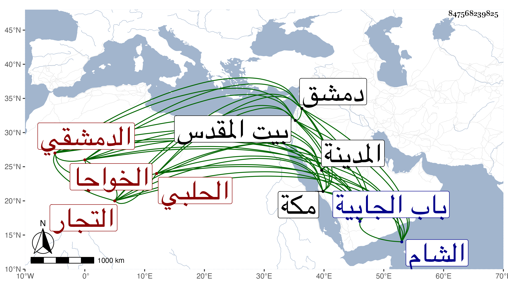

0902Sakhawi.DawLamic.ITO20230111-ara1.EIS1600.847568239825
Biography ID: 847568239825
429
محمد بن علي بن أبي بكر بن محمد الخواجا الكبير الشمس الحلبي ثم الدمشقي والد حسن وعمر الماضيين ويعرف بابن المزلق بضم الميم وفتح الزاي المنقوطة واللام المشددة كبير التجار الدمشقيين . مات وقد زاد على الثمانين في تاسع عشر جمادى الأولى سنة ثمان وأربعين وثمانمائة وصلي عليه بالجامع الأموي ودفن بتربته خارج باب الجابية وكانت جنازته حاقلة حضرها النائب فمن دونه من الأعيان وهو صاحب المآثر الكثيرة بدرب الشام كعدة خانات وإصلاح كثير من طرقاته وغير ذلك وأوصى بثلث ماله ويبدأ منه بتكملة عمارة خان الأرنبية وتنظيف وعرة سعسع ثم ما فضل منه يقسم بين فقراء مكة والمدينة وبيت المقدس ودمشق بالسوية رحمه الله وإيانا .
